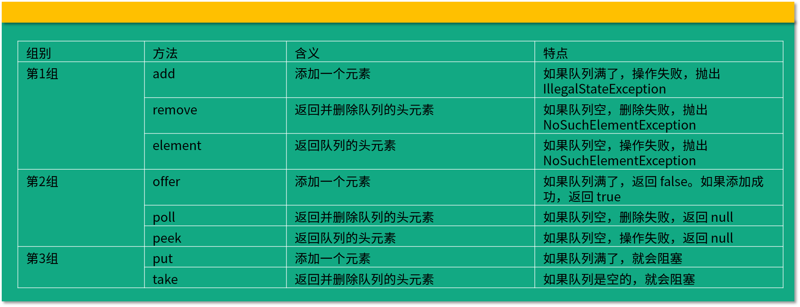

- 00 由点及面，搭建你的 Java 并发知识网.md.html
- 01 为何说只有 1 种实现线程的方法？.md.html
- 02 如何正确停止线程？为什么 volatile 标记位的停止方法是错误的？.md.html
- 03 线程是如何在 6 种状态之间转换的？.md.html
- 04 waitnotifynotifyAll 方法的使用注意事项？.md.html
- 05 有哪几种实现生产者消费者模式的方法？.md.html
- 06 一共有哪 3 类线程安全问题？.md.html
- 07 哪些场景需要额外注意线程安全问题？.md.html
- 08 为什么多线程会带来性能问题？.md.html
- 09 使用线程池比手动创建线程好在哪里？.md.html
- 10 线程池的各个参数的含义？.md.html
- 11 线程池有哪 4 种拒绝策略？.md.html
- 12 有哪 6 种常见的线程池？什么是 Java8 的 ForkJoinPool？.md.html
- 13 线程池常用的阻塞队列有哪些？.md.html
- 14 为什么不应该自动创建线程池？.md.html
- 15 合适的线程数量是多少？CPU 核心数和线程数的关系？.md.html
- 16 如何根据实际需要，定制自己的线程池？.md.html
- 17 如何正确关闭线程池？shutdown 和 shutdownNow 的区别？.md.html
- 18 线程池实现“线程复用”的原理？.md.html
- 19 你知道哪几种锁？分别有什么特点？.md.html
- 20 悲观锁和乐观锁的本质是什么？.md.html
- 21 如何看到 synchronized 背后的“monitor 锁”？.md.html
- 22 synchronized 和 Lock 孰优孰劣，如何选择？.md.html
- 23 Lock 有哪几个常用方法？分别有什么用？.md.html
- 24 讲一讲公平锁和非公平锁，为什么要“非公平”？.md.html
- 25 读写锁 ReadWriteLock 获取锁有哪些规则？.md.html
- 26 读锁应该插队吗？什么是读写锁的升降级？.md.html
- 27 什么是自旋锁？自旋的好处和后果是什么呢？.md.html
- 28 JVM 对锁进行了哪些优化？.md.html
- 29 HashMap 为什么是线程不安全的？.md.html
- 30 ConcurrentHashMap 在 Java7 和 8 有何不同？.md.html
- 31 为什么 Map 桶中超过 8 个才转为红黑树？.md.html
- 32 同样是线程安全，ConcurrentHashMap 和 Hashtable 的区别.md.html
- 33 CopyOnWriteArrayList 有什么特点？.md.html
- 34 什么是阻塞队列？.md.html
- 35 阻塞队列包含哪些常用的方法？add、offer、put 等方法的区别？.md.html
- 36 有哪几种常见的阻塞队列？.md.html
- 37 阻塞和非阻塞队列的并发安全原理是什么？.md.html
- 38 如何选择适合自己的阻塞队列？.md.html
- 39 原子类是如何利用 CAS 保证线程安全的？.md.html
- 40 AtomicInteger 在高并发下性能不好，如何解决？为什么？.md.html
- 41 原子类和 volatile 有什么异同？.md.html
- 42 AtomicInteger 和 synchronized 的异同点？.md.html
- 43 Java 8 中 Adder 和 Accumulator 有什么区别？.md.html
- 44 ThreadLocal 适合用在哪些实际生产的场景中？.md.html
- 45 ThreadLocal 是用来解决共享资源的多线程访问的问题吗？.md.html
- 46 多个 ThreadLocal 在 Thread 中的 threadlocals 里是怎么存储的？.md.html
- 47 内存泄漏——为何每次用完 ThreadLocal 都要调用 remove()？.md.html
- 48 Callable 和 Runnable 的不同？.md.html
- 49 Future 的主要功能是什么？.md.html
- 50 使用 Future 有哪些注意点？Future 产生新的线程了吗？.md.html
- 51 如何利用 CompletableFuture 实现“旅游平台”问题？.md.html
- 52 信号量能被 FixedThreadPool 替代吗？.md.html
- 53 CountDownLatch 是如何安排线程执行顺序的？.md.html
- 54 CyclicBarrier 和 CountdownLatch 有什么异同？.md.html
- 55 Condition、object.wait() 和 notify() 的关系？.md.html
- 56 讲一讲什么是 Java 内存模型？.md.html
- 57 什么是指令重排序？为什么要重排序？.md.html
- 58 Java 中的原子操作有哪些注意事项？.md.html
- 59 什么是“内存可见性”问题？.md.html
- 60 主内存和工作内存的关系？.md.html
- 61 什么是 happens-before 规则？.md.html
- 62 volatile 的作用是什么？与 synchronized 有什么异同？.md.html
- 63 单例模式的双重检查锁模式为什么必须加 volatile？.md.html
- 64 你知道什么是 CAS 吗？.md.html
- 65 CAS 和乐观锁的关系，什么时候会用到 CAS？.md.html
- 66 CAS 有什么缺点？.md.html
- 67 如何写一个必然死锁的例子？.md.html
- 68 发生死锁必须满足哪 4 个条件？.md.html
- 69 如何用命令行和代码定位死锁？.md.html
- 70 有哪些解决死锁问题的策略？.md.html
- 71 讲一讲经典的哲学家就餐问题.md.html
- 72 final 的三种用法是什么？.md.html
- 73 为什么加了 final 却依然无法拥有“不变性”？.md.html
- 74 为什么 String 被设计为是不可变的？.md.html
- 75 为什么需要 AQS？AQS 的作用和重要性是什么？.md.html
- 76 AQS 的内部原理是什么样的？.md.html
- 77 AQS 在 CountDownLatch 等类中的应用原理是什么？.md.html
- 78 一份独家的 Java 并发工具图谱.md.html
35 阻塞队列包含哪些常用的方法？add、offer、put 等方法的区别？
在本课时中我们主要讲解阻塞队列包含哪些常用的方法，以及 add，offer，put 等方法的区别。
在阻塞队列中有很多方法，而且它们都非常相似，所以非常有必要对这些类似的方法进行辨析，所以本课时会用分类的方式，和你一起，把阻塞队列中常见的方法进行梳理和讲解。
我们把 BlockingQueue 中最常用的和添加、删除相关的 8 个方法列出来，并且把它们分为三组，每组方法都和添加、移除元素相关。
这三组方法由于功能很类似，所以比较容易混淆。它们的区别仅在于特殊情况：当队列满了无法添加元素，或者是队列空了无法移除元素时，不同组的方法对于这种特殊情况会有不同的处理方式：
- 抛出异常：add、remove、element
- 返回结果但不抛出异常：offer、poll、peek
- 阻塞：put、take
第一组：add、remove、element
add 方法
add 方法是往队列里添加一个元素，如果队列满了，就会抛出异常来提示队列已满。示例代码如下：
private static void addTest() {
BlockingQueue<Integer> blockingQueue = new ArrayBlockingQueue<Integer>(2);
blockingQueue.add(1);
blockingQueue.add(1);
blockingQueue.add(1);
}
在这段代码中，我们创建了一个容量为 2 的 BlockingQueue，并且尝试往里面放 3 个值，超过了容量上限，那么在添加第三个值的时候就会得到异常：
Exception in thread "main" java.lang.IllegalStateException:Queue full
remove 方法
remove 方法的作用是删除元素，如果我们删除的队列是空的，由于里面什么都没有，所以也无法删除任何元素，那么 remove 方法就会抛出异常。示例代码如下：
private static void removeTest() {
ArrayBlockingQueue<Integer> blockingQueue = new ArrayBlockingQueue<Integer>(2);
blockingQueue.add(1);
blockingQueue.add(1);
blockingQueue.remove();
blockingQueue.remove();
blockingQueue.remove();
}
在这段代码中，我们往一个容量为 2 的 BlockingQueue 里放入 2 个元素，并且删除 3 个元素。在删除前面两个元素的时候会正常执行，因为里面依然有元素存在，但是在删除第三个元素时，由于队列里面已经空了，所以便会抛出异常：
Exception in thread "main" java.util.NoSuchElementException
element 方法
element 方法是返回队列的头部节点，但是并不删除。和 remove 方法一样，如果我们用这个方法去操作一个空队列，想获取队列的头结点，可是由于队列是空的，我们什么都获取不到，会抛出和前面 remove 方法一样的异常：NoSuchElementException。示例代码如下：
private static void elementTest() {
ArrayBlockingQueue<Integer> blockingQueue = new ArrayBlockingQueue<Integer>(2);
blockingQueue.element();
}
我们新建了一个容量为 2 的 ArrayBlockingQueue，直接调用 element 方法，由于之前没有往里面添加元素，默认为空，那么会得到异常：
Exception in thread "main" java.util.NoSuchElementException
第二组：offer、poll、peek
实际上我们通常并不想看到第一组方法抛出的异常，这时我们可以优先采用第二组方法。第二组方法相比于第一组而言要友好一些，当发现队列满了无法添加，或者队列为空无法删除的时候，第二组方法会给一个提示，而不是抛出一个异常。
offer 方法
offer 方法用来插入一个元素，并用返回值来提示插入是否成功。如果添加成功会返回 true，而如果队列已经满了，此时继续调用 offer 方法的话，它不会抛出异常，只会返回一个错误提示：false。示例代码如下：
private static void offerTest() {
ArrayBlockingQueue<Integer> blockingQueue = new ArrayBlockingQueue<Integer>(2);
System.out.println(blockingQueue.offer(1));
System.out.println(blockingQueue.offer(1));
System.out.println(blockingQueue.offer(1));
}
我们创建了一个容量为 2 的 ArrayBlockingQueue，并且调用了三次 offer方法尝试添加，每次都把返回值打印出来，运行结果如下：
true
true
false
可以看出，前面两次添加成功了，但是第三次添加的时候，已经超过了队列的最大容量，所以会返回 false，表明添加失败。
poll 方法
poll 方法和第一组的 remove 方法是对应的，作用也是移除并返回队列的头节点。但是如果当队列里面是空的，没有任何东西可以移除的时候，便会返回 null 作为提示。正因如此，我们是不允许往队列中插入 null 的，否则我们没有办法区分返回的 null 是一个提示还是一个真正的元素。示例代码如下：
private static void pollTest() {
ArrayBlockingQueue<Integer> blockingQueue = new ArrayBlockingQueue<Integer>(3);
blockingQueue.offer(1);
blockingQueue.offer(2);
blockingQueue.offer(3);
System.out.println(blockingQueue.poll());
System.out.println(blockingQueue.poll());
System.out.println(blockingQueue.poll());
System.out.println(blockingQueue.poll());
}
在这个代码中我们创建了一个容量为 3 的 ArrayBlockingQueue，并且先往里面放入 3 个元素，然后四次调用 poll 方法，运行结果如下：
1
2
3
null
前面三次 poll 都运行成功了，并且返回了元素内容 1、2、3，是先进先出的顺序。第四次的 poll 方法返回 null，代表此时已经没有元素可以移除了。
peek 方法
peek 方法和第一组的 element 方法是对应的，意思是返回队列的头元素但并不删除。如果队列里面是空的，它便会返回 null 作为提示。示例代码如下：
private static void peekTest() {
ArrayBlockingQueue<Integer> blockingQueue = new ArrayBlockingQueue<Integer>(2);
System.out.println(blockingQueue.peek());
}
运行结果：
null
我们新建了一个空的 ArrayBlockingQueue，然后直接调用 peek，返回结果 null，代表此时并没有东西可以取出。
带超时时间的 offer 和 poll
第二组还有一些额外值得讲解的内容，offer 和 poll 都有带超时时间的重载方法。
offer(E e, long timeout, TimeUnit unit)
它有三个参数，分别是元素、超时时长和时间单位。通常情况下，这个方法会插入成功并返回 true；如果队列满了导致插入不成功，在调用带超时时间重载方法的 offer 的时候，则会等待指定的超时时间，如果时间到了依然没有插入成功，就会返回 false。
poll(long timeout, TimeUnit unit)
带时间参数的 poll 方法和 offer 类似：如果能够移除，便会立刻返回这个节点的内容；如果队列是空的就会进行等待，等待时间正是我们指定的时间，直到超时时间到了，如果队列里依然没有元素可供移除，便会返回 null 作为提示。
第三组：put、take
第三组是我们比较熟悉的、阻塞队列最大特色的 put 和 take 方法，我们复习一下 34 课时里对于 put 和 take 方法的讲解。
put 方法
put 方法的作用是插入元素。通常在队列没满的时候是正常的插入，但是如果队列已满就无法继续插入，这时它既不会立刻返回 false 也不会抛出异常，而是让插入的线程陷入阻塞状态，直到队列里有了空闲空间，此时队列就会让之前的线程解除阻塞状态，并把刚才那个元素添加进去。
take 方法
take 方法的作用是获取并移除队列的头结点。通常在队列里有数据的时候会正常取出数据并删除；但是如果执行 take 的时候队列里无数据，则阻塞，直到队列里有数据；一旦队列里有数据了，就会立刻解除阻塞状态，并且取到数据。

总结
以上就是本课时的内容，本课时我们讲解了阻塞队列中常见的方法并且把它们分为了三组，每一组都有各自的特点。第一组的特点是在无法正常执行的情况下抛出异常；第二组的特点是在无法正常执行的情况下不抛出异常，但会用返回值提示运行失败；第三组的特点是在遇到特殊情况时让线程陷入阻塞状态，等到可以运行再继续执行。
我们用表格把上面 8 种方法总结如下：
 有了这个表格之后，我们就可以非常清晰地理清这 8 个方法之间的关系了，课后你可以仔细对比表格以加深印象。